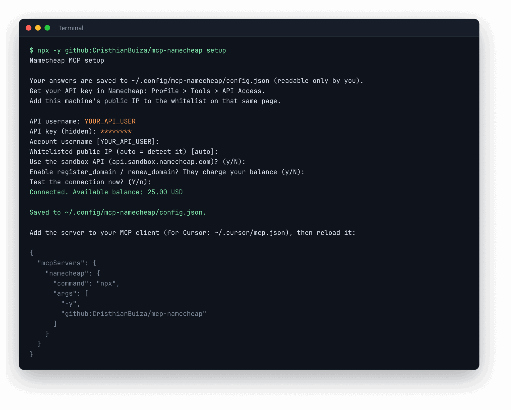
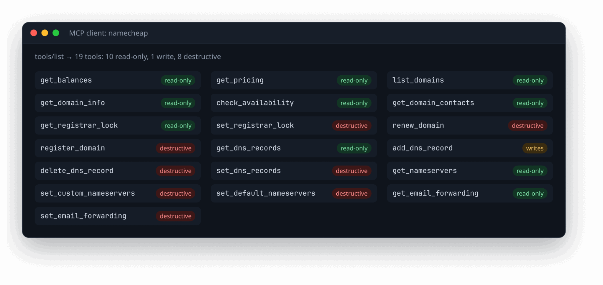
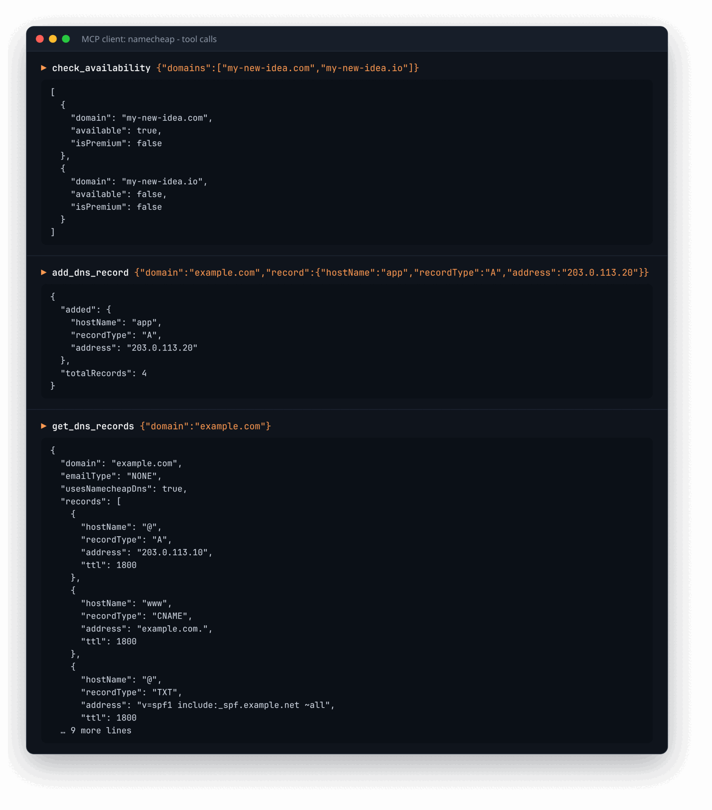

Namecheap, managed by your AI agent.
mcp-namecheap connects Cursor, Claude Desktop, VS Code or any MCP client to the Namecheap API, so an agent can list domains, check availability, edit DNS records, switch nameservers and set up email forwarding, safely.
npx -y github:CristhianBuiza/mcp-namecheap setup
Needs Node.js 21.7+. The guided setup asks for your API credentials, tests them and saves them privately.
How it works
The server runs on your machine and speaks MCP over stdio. Your client launches it, the agent picks a tool, and the server translates the call into a Namecheap XML API request and returns compact JSON.
Features
Everything an agent needs for day-to-day domain work, with guardrails on the operations that cost money or replace data.
◎Domains
List and search domains, read details and contacts, check availability (premium names included) and toggle the registrar lock.
≡DNS records
A, AAAA, ALIAS, CAA, CNAME, MX, MXE, NS, TXT and URL records. Adding or deleting one record keeps every other record intact.
⇄Nameservers
Point a domain to custom nameservers such as Cloudflare, or switch it back to Namecheap DNS.
✉Email forwarding
Read and replace forwarding rules, e.g. info@ to your team inbox.
$Account & pricing
Check balance and auto-renew funds, and look up prices for domains, SSL and WhoisGuard.
⛨Safe by default
Register and renew are off until you enable them. Every tool is annotated read-only or destructive so clients can ask before acting.
Setup in four steps
No env files to write by hand: the setup command asks for each value, tests it, and stores it in a file only you can read, outside any repository.
Enable the Namecheap API
In Namecheap open Profile > Tools > API Access, turn it on, copy the API key and whitelist your machine's public IP.
curl https://api.ipify.org # shows the IP to whitelist
Run the guided setup
It asks for the API username and key (hidden while you type), the whitelisted IP, sandbox and purchase options, then tests the connection.
npx -y github:CristhianBuiza/mcp-namecheap setup
Add it to your MCP client
Setup prints this snippet. For Cursor, paste it into ~/.cursor/mcp.json. No secrets go in the client config.
{
"mcpServers": {
"namecheap": { "command": "npx", "args": ["-y", "github:CristhianBuiza/mcp-namecheap"] }
}
}
Reload and ask
Reload MCP servers in your client and try: "List my domains expiring soon" or "Add an A record for app.example.com pointing to 203.0.113.20".
Screenshots
Real output from the server, captured from a throwaway install.
These were captured by running the actual server from GitHub against a simulated Namecheap API, with placeholder credentials (YOUR_API_USER, YOUR_API_KEY) and documentation-only IPs and domains.



Built to be safe
An API key can control your whole account, so the defaults are conservative.
- Private settings file. Saved with permissions 600 in your user config folder, never inside a repository.
- No accidental spending.
register_domainandrenew_domainstay disabled until you opt in. - No lost DNS records. Single-record edits read the full set first and write it back.
- Sandbox support. Try workflows against
api.sandbox.namecheap.combefore touching real domains.